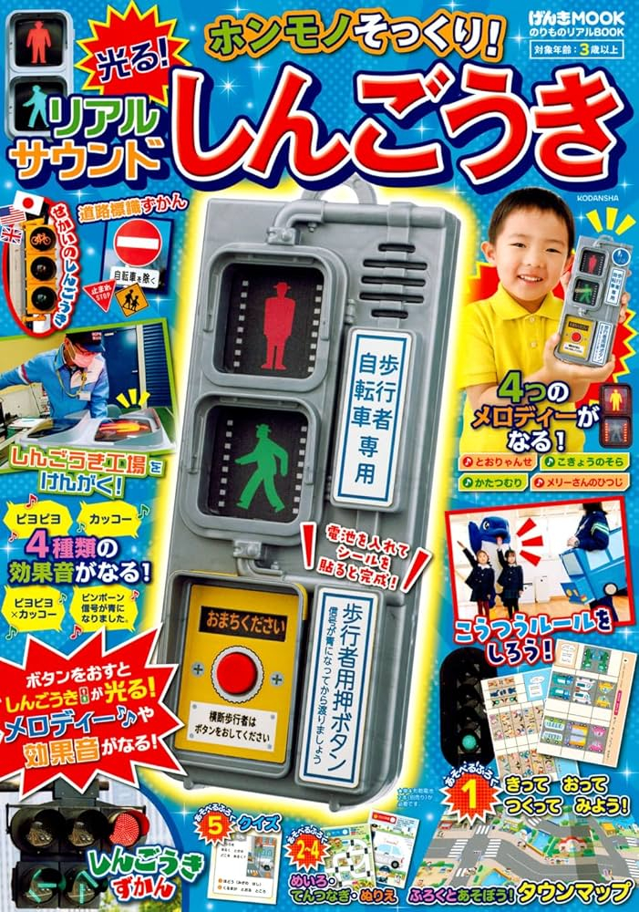

日本親子選物誌

講談社げんきMOOK・交通安全互動書
のりものリアルBOOK
ホンモノそっくり！光る！リアルサウンドしんごうき真實交通號誌互動遊戲書
附錄：擬真發光音效交通號誌
這本主打擬真交通號誌玩具，按下按鍵即可切換紅、黃、綠燈，並搭配真實感音效。孩子可以一邊玩小汽車，一邊理解「紅燈停、綠燈行」等基本交通規則，把日常路口經驗轉化成可操作、可扮演的親子遊戲。
交通號誌發光音效紅黃綠燈小汽車遊戲交通安全教育
本期看點
《のりものリアルBOOK》屬於講談社げんきMOOK 的交通工具互動書，重點不只是閱讀，而是把孩子熟悉的道路、車輛、號誌與交通規則做成可動手操作的遊戲場景。這一本的核心賣點是「真實感」：外型像真正的交通號誌，燈號會發光，操作也能搭配音效，對喜歡車車、道路、交通工具的孩子非常有吸引力。
擬真交通號誌紅、黃、綠燈可發光，孩子能直覺理解不同燈號代表的行動規則。
聲光操作回饋按鍵、燈光、音效一起出現，比單純紙上學習更容易吸引幼兒反覆遊玩。
延伸車車遊戲可搭配 TOMICA、小汽車、巴士、工程車，讓家中既有玩具多一個交通情境。
附錄介紹：擬真發光音效交通號誌
「ホンモノそっくり！光る！リアルサウンドしんごうき」可自然翻譯為「擬真發光音效交通號誌」。它的商品力在於孩子一看就知道怎麼玩：交通號誌是幼兒每天在路上都會看到的生活物件，做成小型互動玩具後，孩子可以自己控制燈號，也能把道路規則變成角色扮演。
✅ 紅黃綠燈發光按下操作後，交通號誌會亮起不同燈號，孩子能清楚看到紅燈、黃燈、綠燈的變化。
✅ 真實感音效搭配交通號誌聲音，讓遊戲更像真實街道路口，提升沉浸感。
✅ 日本街道生活體驗透過日式交通號誌與道路情境，孩子可以認識日本街頭常見的交通文化。
✅ 小汽車情境加倍不只看書，也能搭配家中小車玩具，變成完整的道路遊戲。
怎麼玩？
這本的玩法不需要複雜教學，孩子只要有小汽車或想像中的道路，就能馬上開始。最適合的呈現方式，是把它當成一座迷你城市路口。
🚦 紅燈停、綠燈行家長控制號誌，孩子開小汽車。紅燈亮時停下來，綠燈亮時再出發，建立最基本的交通安全概念。
🚗 開車旅行把桌面、地墊或書中道路當成城市地圖，讓小車依照號誌指示前進，延伸成車站、商店、學校等目的地遊戲。
🚸 行人過馬路可以加入小人偶或家長口頭情境，練習「先看紅綠燈，再過馬路」的日常安全習慣。
🎭 交通警察角色扮演孩子可以扮演交通警察、司機、行人或公車司機，透過對話自然練習規則與順序。
🚙 搭配 TOMICA若家中已有 TOMICA、小汽車、巴士或工程車，這個附錄可以直接變成道路遊戲的核心配件。
👨👩👧 親子互動問答家長可以問：「現在是什麼燈？車子可以走嗎？行人可以過嗎？」讓孩子邊玩邊回答。
影片示範
⭐ 為什麼推薦這本？
日本親子選物誌編輯推薦
① 把交通安全變成遊戲孩子透過操作紅綠燈、控制車輛前進與停止，自然理解交通規則，比單純說教更容易留下印象。
② 可以和家中車車一起玩如果家裡已有 TOMICA、小汽車、工程車，這個交通號誌可以直接加入遊戲，不容易玩一次就收起來。
③ 聲光效果提升投入感燈號會發光，加上交通號誌音效，比一般紙製附錄更有臨場感，也更能吸引孩子反覆操作。
④ 適合親子互動家長可以扮演交通警察，孩子扮演駕駛或行人，一起練習等待、觀察與遵守規則。
電商呈現建議：主圖可放封面與交通號誌本體；第二張拍燈號發光特寫；第三張拍小汽車停在號誌前等待通行。這樣比只展示封面更容易讓家長理解附錄價值。
商品資訊
| 日文書名 | のりものリアルBOOK ホンモノそっくり！光る！リアルサウンドしんごうき |
|---|---|
| 中文頁名 | のりものリアルBOOK (附擬真發光音效交通號誌) |
| 中文名稱 | 真實交通號誌互動遊戲書 |
| 出版社 | 講談社 |
| 系列 | げんきMOOK |
| 発売日 | 2023年7月22日頃 |
| ISBN | 9784065313596 |
| 主要附錄 | 擬真發光音效交通號誌 |
| 適合族群 | 喜歡交通工具、小汽車、紅綠燈、聲光玩具與角色扮演的幼兒家庭。 |
| 建議搭配 | TOMICA 小汽車、巴士、工程車、道路地墊、積木城市場景。 |